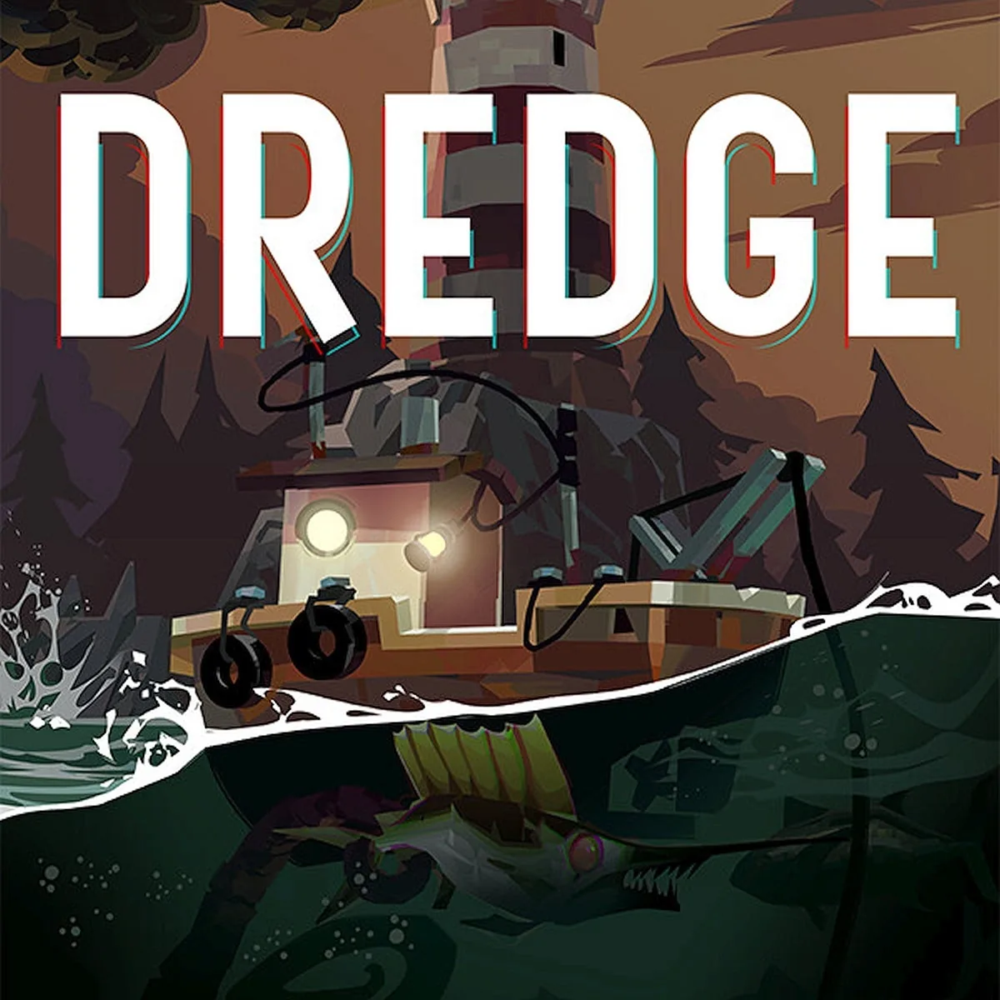
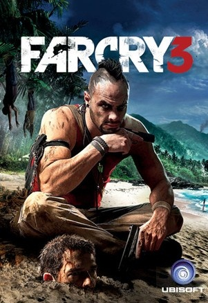
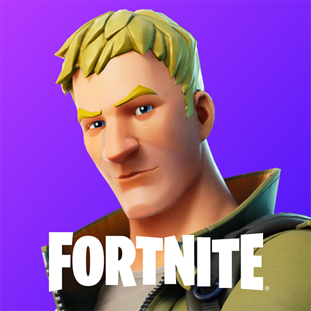

O contraste entre a calmaria da pesca quando está de dia
e o terror psicológico
ao anoitecer é um ponto muito positivo do jogo.
A históriaconstruída durante a
progressão do jogo são muito boas e criativas.

A liberdade de caçar, invadir postos avançados, explorar
uma ilha tropical é
incrível, acompanhar a evolução do
personagem com os acontecimentos do jogo
é muito recompensador.
Um dos vilões mais icônicos dos jogos: Vaas Montenegro.

Atualmente não jogo, mas é o jogo mais nostálgico possível,
joguei durante minha
infância e sempre gostei muito das mecânicas
de construção, battleroyale frenético
e constantes atualizações incluindo personagens famosos.